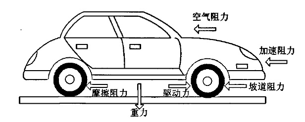
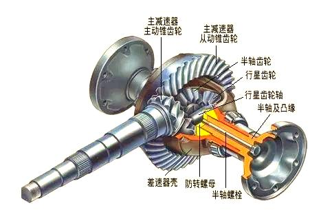
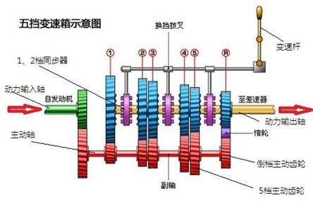
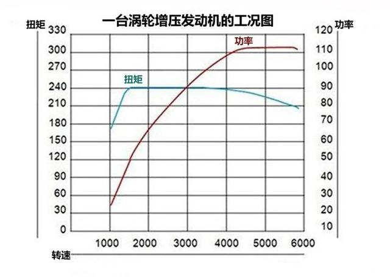
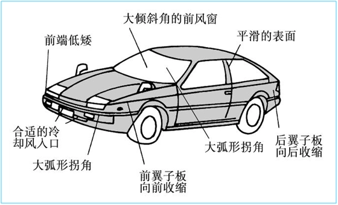
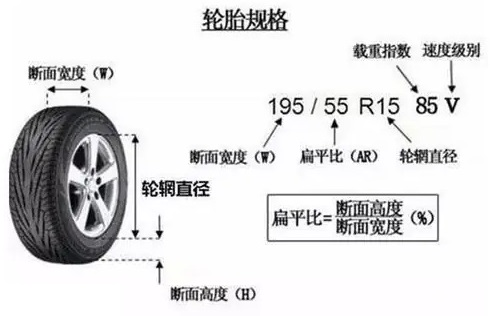
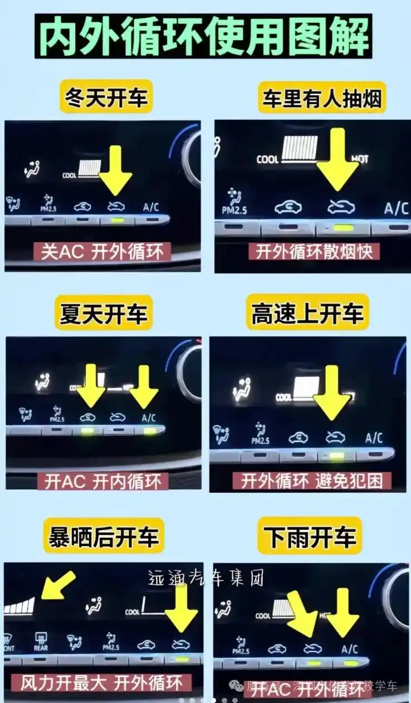

目录

汽车在行驶的时候，只有一个主动向前的力，就是发动机或者电机提供的驱动力。
但是收到了来自四面八方的阻力，其中包括：
1) 由路面产生的摩擦阻力；
2) 由迎面而来的空气产生的风阻；
3) 由不平路面造成的坡道阻力等。
常规情况下，轿车的风阻系数一般在0.27-0.32之间，SUV一般在0.33-0.4之间。
和汽车运动阻力相关的风阻系数，其大小取决于汽车的造型。
车辆速度越高，车辆的风阻就越大。
驱动力 = 扭矩 * 变速箱齿比 * 主减速器速比 * 机械效率 / 轮胎半径
扭矩通过转速表对照发动机工况图（横轴是转速，有扭矩曲线）得出。
（一档通常减速、增矩35倍左右。档位增加，倍数减少）
手动变速箱的机械效率约95%；

以标致307XS1.6MT为例，齿比和速度的关系如下：
车辆搭载1.6L自然吸气L4发动机，最大功率78kW/5750rpm，最大扭矩142N·m/4000rpm，整备质量1293公斤。
1档齿比3.418 (7.24 km/h @ 1000 rpm)

Honda 8代Civic 1.8(整备质量为1210kg)的最大扭矩为173.5Nm@4300rpm，表示引擎在4300转/分时的输出扭矩为173.5Nm，那173.5N的力量怎么能使1吨多的汽车跑起来呢？其实引擎发出的扭矩要经过放大（代价就是同时将转速降低）这就要靠变速箱、终传和轮胎了。引擎释放出的扭力先经过变速箱作“可调”的扭矩放大（或在超速挡时缩小）再传到终传（尾牙）里作进一步的放大（同时转速进一步降低），最后通过轮胎将驱动力释放出来。如某车的1挡齿比（齿轮的齿数比，本质就是齿轮的半径比）是3，尾牙为4，轮胎半径为0.3米，原扭矩是200Nm的话，最后在轮轴的扭力就变成200×3×4=2400Nm（设传动效率为100%），再除以轮胎半径0.3米后，轮胎与地面摩擦的部分就有2400Nm/0.3m=8000N的驱动力，这就足以驱动汽车了。
一般情况下，汽车与地面的动摩擦因数为0.1，也就是说如果汽车不挂档，一辆车的重量大约是正好能推动它的力量的10倍。而最大静摩擦因数一般为0.7左右，也就是说如果是挂档的或者刹车时一辆车的重量大约是正好能推动它的力量的1.5倍左右。
汽车车速v与发动机转速n之间的关系：
$$ V = 0.377\frac{n·R_{Wheel}}{i_{GearRatio}} $$| V：汽车车速（km/h） | i：变速比（>1） |
| n：电动机转速（r/min） | R：车轮半径（m） |
| n：电动机转速（r/min） | i_g：变速器传动比 |
| r：车轮半径（m） | i_o：主减速器传动比 |
扭矩在物理学中就是力矩的大小，等于力和力臂的乘积，国际单位是牛·米。
扭矩(T) = 力(F) * 力臂 * sinθ
θ表示力的方向与力臂之间的夹角。
动力 * 动力臂 = 阻力 * 阻力臂
力臂越长，越省力，但速度越慢。
发动机的扭矩就是指发动机从曲轴端输出的力矩。在功率固定的条件下它与发动机转速成反比关系，转速越快扭矩越小，反之越大，它反映了汽车在一定范围内的加速、爬坡、负载能力。
力使物体改变运动状态和获得加速度。
1牛顿是使1千克的质量产生1m/s2加速度的力。
F = m·a
式中F是力，a是加速度，m是该物体的质量。
G = m·g
g为重力加速度，质量为1千克的物体所受到的重力约为9.8N（受纬度影响）。
1牛大约相当于在地球上托起1/9.8kg的东西（如两个鸡蛋）。
功是物理学中表示力对物体作用空间累积的物理量，又称机械功（还有电功），国际单位制单位为焦耳(J)。其定义为物体在力的方向上发生位移时该力所做的功，计算公式为
W = F·s·cosα
其中F为作用力，s为位移，α为力与位移的夹角。
焦耳被定义为用1牛顿的力对一物体使其发生1米的位移所做的机械功的大小。量纲相同的单位牛·米有时也使用，但是一般牛·米用于力矩，使其跟功和能区别开。
功率是指单位时间内传递或转换的能量，用以衡量体系做功的快慢，在国际单位制下，其单位为瓦特（Watt，W），为焦耳/秒，也就是N·m/s，机械功的1瓦特表示1秒用1牛顿的力让一物体发生1米的位移。
P(N·m/s) = w/t = F·s·cosa/t = f·v·cosa
P(N·m/s) = w/t = F·v·cosa
P(N·m/s) = w/t = 扭矩(N·m) × 转速(角速度(弧度/秒))
P(N·m/s) = w/t = 扭矩(N·m) × 转速(rpm) × 2π/60
功率(kw) = 扭矩(N·m) × 转速(rpm) / 9549
一匹马1秒能够把75千克的水提高1米，即1马力=75千克力・米/秒。等于9.8*75瓦，也就是0.735千瓦。
负重10kg，并以13.3s的时间跑完100m(7.5m/s)，就是1马力的功率。
汽车在某一时间点的功率反映汽车在维持某一速度（转速）的同时还具有的加速、爬坡、负载的能力（扭矩）。
汽车档位就是一定转速和扭矩的组合（换档就是改变力臂（齿比）来改变扭矩和转速）。
发动机排量是发动机各汽缸工作容积的总和，一般用升（L）表示。而汽缸工作容积则是指活塞从上止点到下止点所扫过的气体容积，又称为单缸排量，它取决于缸径和活塞行程。一般来说，排量越大，发动机输出功率越大。
排量越大，吸入和燃烧的混合气越多，潜在功率越高，但排量并非唯一决定因素。
燃烧效率是关键：高效燃烧能释放更多能量，提升功率，这依赖于压缩比、燃油喷射技术（如直喷系统）、点火正时的精确控制，以及进气系统提供的充足氧气。
机械与控制系统同样重要：发动机控制系统优化燃油喷射和点火时机，排气系统设计减少背压，而涡轮增压等技术通过增加进气量间接提升功率。
需注意区分发动机功率与车辆性能：发动机功率指其内部做功快慢，而车辆实际表现还受传动损耗、车身重量等影响，但这些外部因素不改变发动机本身的输出功率。
提升发动机功率的核心在于优化“进气-燃烧-排气”循环，通过增加每次做功的能量或提高做功频率来实现。
以下方法从硬件、软件和养护角度综合阐述。
重点在于改善气流效率和燃烧强度，具体措施包括：
进气系统：换装高流量空气滤清器或进气歧管，减少进气阻力，让发动机更顺畅“呼吸”。
排气系统：升级为低背压排气管和消声器，加速废气排出，降低排气阻力。
增压技术：采用涡轮增压或机械增压，强制压缩空气进入气缸，显著增加进气量，从而允许喷入更多燃油，提升每次做功的能量。
燃烧强化：使用高性能火花塞和点火线圈，确保火花更强劲、点火更精准，促进燃料充分燃烧。
内部结构：更换轻量化活塞、连杆等部件，降低运动惯性，提升转速响应速度；调整凸轮轴以优化气门正时，增加进气充量。
发动机控制器（Engine Control Unit，缩写ECU），又称引擎控制模块（ECM），是控制内燃机运作的电子装置，属于汽车专用微机控制器。其通过氧传感器、爆震传感器、水温传感器等采集发动机状态信息，结合进气量、转速等参数控制燃油喷射量、点火正时及怠速运转，形成闭环控制系统。
通过修改发动机控制单元（ECU）程序，优化动力输出逻辑，例如：
ECU刷写：调整油气混合比、点火正时和气门开闭策略，一阶程序无需硬件改动即可提升10%-20%功率；高阶程序需配合进气、排气系统升级，功率提升可达25%-40%。
增压发动机：通过ECU调整增压压力，直接增加每循环进气量，从而放大扭矩输出。
定期维护是维持功率的基础，包括：
每行驶5000-10000公里检查或更换空气滤清器，避免进气阻力增加15%以上。
定期清洁喷油嘴和调整点火正时，防止积碳影响燃烧效率。
使用符合标号的高品质机油和保持冷却系统高效工作，降低内部摩擦并控制发动机温度，确保动力稳定输出。
增压技术的作用：对于涡轮增压或机械增压发动机，增压系统是功率提升的关键，通过增加进气压力，可在不改变排量的前提下显著提高每循环做功量；但增压压力提升会加大发动机负荷，需配合硬件升级（如强化气缸盖、活塞等）以保障可靠性。
注意事项：功率提升需平衡安全性与成本，硬件改装和软件调校应协同进行，避免单一措施导致系统失衡；同时，日常养护不可忽视，定期维护能防止因部件老化或积碳造成的功率衰减。
低转速低档位，高转速高档位，这是正常的操作方式。但低转速高档位或高转速低档位却有不同寻常的效果。
就经济性来说，当然是发动机输出的功率（转速）不浪费为最佳。怎样才是不浪费呢？功率表征为变速箱输出扭矩（用于加速、爬坡、负载等）和变速箱输出转速。功率不浪费，就是变速箱输出扭矩和变速箱输出转速不浪费。
汽车通常会附带一张转速-扭矩图（也称为发动机工况图），图的横轴代表发动机转速（单位通常为转每分钟，rpm），纵轴代表扭矩（单位通常为牛顿米，N·m）。图中一般包含两条曲线：扭矩曲线（常以蓝色表示）和功率曲线（常以红色表示）。

所以，在正常情况下，高档位低转速是最佳的巡航方式，但前提是不能出现拖档现象。也就是说，在不拖档的情况下，将功率尽可能实现转速输出最大。
而低档位高转速虽然弊端不少，但基本不会对发动机造成实质性伤害。
说到低档位高转速行驶，优点只有一个——动力爆发力强！这很好理解，档位越低，变速箱对发动机扭矩的放大倍数越大；
同时发动机转速越高，做功频率越高，动力输出越强。
所以低档位高转速行驶时，踩一点点油门，车就能"嗖"地窜出去。
但缺点也相当明显：
费油到飞起。
低档位高转速时，发动机负荷小（也就是不需要踩很深的油门就有足够动力），而负荷越小，热效率越低，油耗自然更高。
另外，发动机高速旋转本身也消耗更多能量，这部分都是纯损耗。
行驶品质差。
转速高，噪音和震动就大；
发动机制动力也更强，松油门就会有明显顿挫感；
换挡时也更难平顺协调。
磨损加速。
转速越高，摩擦越剧烈，发动机温度上升更快，零部件磨损和机油衰减速度都会加快。
我得说，在发动机正常运行区间内，高档位低转速确实是最佳的行驶状态，有这么几个好处：
省油效果明显。
高档位时，发动机需要输出更大扭矩才能维持同样车速，所以负荷更大，热效率更高，油耗就更低。
而且低转速运行时动力损耗小，也有助于降低油耗。
行驶品质好。
低转速时发动机更安静，震动更小，松油门时的制动力也更平顺，不容易出现顿挫感。
发动机寿命长。
低转速下各部件磨损速度慢，发动机温度相对稳定，机油也能保持更长的有效期。
但这里有个大前提——必须选择适当的高档位低转速，而不是盲目追求低转速！
很多车友认为高档位低转速一定省油护车，结果不分场合一味追求高挡位，最后把车开出了大问题。
拖档，就是最典型的错误操作！
什么是拖档？简单说，就是发动机转速过低，但你又想维持甚至提高车速，此时发动机输出的扭矩不足以克服阻力，但你仍然强行用这个档位。
拖档时，发动机会发出沉闷的"哐哐"声，整车有明显震动，踩油门加速时动力极其疲软。
这个声音不是别的，正是活塞在"猛砸"汽缸壁的声音！
为什么会这样？正常情况下，活塞与汽缸壁是有间隙的，靠活塞环与汽缸壁接触密封。
活塞工作时有轻微的侧向摆动，但因为大部分力都输出到曲轴上了，所以这种轻微接触不会对汽缸壁造成伤害。
拖档，就是拖不动啊。
但拖档时，混合气膨胀的力量几乎推不动活塞了，这股力量必须找地方发泄，结果就在活塞横向产生巨大分力，使活塞剧烈摇摆，对着汽缸壁猛砸。
长此以往，真的有可能拉缸！
所以，一旦发现拖档迹象，立刻踩离合降挡！千万别指望踩油门能解决问题。
首先我要说，并非所有高档位低转速行驶都会导致积碳增加。
我们需要区分"健康"和"不健康"的高档位低转速：
健康的高档位低转速：比如车速80km/h，用5挡行驶时发动机转速为2000转，而4挡是2300转。
这种情况下用5挡行驶，转速并不算特别低，对大多数车来说处于高效区间，燃烧良好，不仅不会增加积碳，反而更省油。
不健康的高档位低转速：比如车速40km/h，用5挡行驶转速仅1000转。
这种情况下容易产生积碳，主要原因是：
低转速影响混合气质量。
转速太低时，气流进入气缸的速度也低，气缸内气流运动不剧烈，不利于汽油充分蒸发和混合。
低转速影响排气效率。
转速低时废气流速慢，惯性小，导致更多废气残留在燃烧室，影响下一循环的混合气质量。
特别是当转速低于1000转时，为保证稳定燃烧不熄火，发动机控制系统会增加喷油量，因为浓混合气更容易燃烧，但这反而导致燃烧进一步恶化，积碳产生速度更快。
对于自动挡车主，你几乎不需要担心这个问题。
现代自动变速箱的控制策略都是工程师根据发动机特性精心调校的，既保证发动机健康工作，又兼顾油耗表现。
对于手动挡车主，可以从这几点判断：
听发动机声音：如果发动机声音沉闷，车身有明显共振，整个车厢有嗡嗡的低频噪音，甚至还有"哐当"的爆震声，踩油门加速无力，那就是挡位太高了，赶紧降挡！
感受行驶品质：如果发动机声音平稳有力，车身震动轻微且频率高，踩油门有明显加速感，说明当前档位和车速匹配良好。
平路匀速行驶时，尽量使用高档位低转速，因为此时驱动车辆的功率需求低，高档位低转速最合适，但要确保转速不要低于1500转。
上坡路段时，与其用高档位勉强维持车速，不如直接降一个档位。
手动挡直接降挡，自动挡可以挂入S挡或用手动模式限制一下档位。
定期"撒撒欢"。
就像人需要适当运动一样，发动机也需要偶尔高转速运转，有助于清理刚形成的积碳。
我建议每周至少一次，找个安全路段，让发动机转速达到3000转以上持续一会儿。
就像我们人一样，平时总是不怎么运动，时间长了肌肉就不结实了，关节也僵硬了。
发动机也需要"适度锻炼"！
提升驾驶平顺性：一档的减速比最大，若在高转速下长时间保持一档，稍一松油门就会产生强烈的发动机制动，导致车辆出现明显顿挫感。尽快升入二档能有效缓解这种冲击，使加速过程更平稳。
改善燃油经济性：一档设计用于提供最大扭矩以克服静止惯性，但其齿轮比会导致发动机在较高转速下运行，油耗相对较高。当车辆开始移动后，及时换入二档能让发动机转速下降至更经济的区间（通常为1800-2500转/分钟），从而降低燃油消耗。
减少发动机与变速箱磨损：长期在高转速下使用一档会增加发动机和离合器的负担。尽快升档有助于让发动机保持在高效、低负荷的工作区间，减少不必要的机械磨损，延长车辆使用寿命。
适应现代车辆特性：对于大多数家用手动挡汽车，在路况允许且无急加速需求时，起步后车速达到10-20公里/小时（或发动机转速达1800-2500转/分钟）即可换入二档。此时车辆动力已足够，继续使用一档反而会降低效率。
需要注意的是，“尽快”并非指“立即”。若在车速过低（如低于5公里/小时）或发动机转速过低时强行升档，会导致转速骤降，引发熄火或严重顿挫。正确的做法是：在车辆平稳起步、速度和转速达到合理范围后，迅速而平稳地完成换挡操作。
记住，没有绝对的"最佳驾驶方式"，根据路况灵活选择才是王道。
如果要总结的话：
平路巡航：高档位低转速（注意不要低于1500转）。
山路上坡：适当降档，保持动力。
超车加速：果断降档，提供动力。
理想的性价比是既要有足够的加速力去克服各种阻力，又能达到足够的速度且不伤车。
偶尔高转：定期让发动机"撒欢"，清理积碳。
最后，无论你选择什么驾驶方式，安全永远是第一位的。
合理匹配档位和转速，既能让爱车更省油、更长寿，又能让你的驾驶更轻松、更愉快。
所以说车感是指对车身、车速、发动机转速、各操作部件的感知与把控力；只有把控自如、才能人车合一。
高速路上开车，驾驶员所感受到的“发飘”与“沉稳”，其实归根结底属于汽车在高速行驶状态的“受控制”程度。
比如说车身与方向盘的抖动、左右摇摆的横向异动、方向盘变轻、“路感”的反馈缺失、转向不足或转向过度等等现象，都可能导致高速行驶稳定性的下降，降低驾驶员对车辆驾控的信心。
但其实“飘与不飘”与我们惯常印象中的车重关系并不大，多坐几个人也未必能够增加高速稳定性，最简单的反例就是SUV或越野车，这类车型的车重普遍在1.6-2.5吨之间，远远大于同级别普通家用轿车的重量。
汽车空气动力学设计、底盘平整度和悬挂调校方案、轮胎的选用等等，才是影响车辆高速稳定性的关键因素。
空气动力学是汽车设计的重要内容，汽车高速行驶的动态表现在很大程度上是由其自身空气动力学设计所决定的。
汽车行进时所受阻力大致可分为机械阻力和空气阻力两部分。随着车速的提高，空气阻力所占比例迅速提高。以美国60年代生产的典型轿车为例,车速为每小时60公里时,空气阻力为行驶总阻力的33%～40%;车速为每小时100公里时,空气阻力为行驶总阻力的50%～60%；车速为每小时150公里时,空气阻力为行驶总阻力的70%～75%。
汽车在高速行驶的过程中需要冲破前方空气阻力屏障，被击散的空气从车身各个表面相对流动，在经过不同形状的表面时，由于流过的空气体积相等，因为车顶是弯的，车顶空气在同一时间要走过比车底空气大的路程，所以流速比较大.所以汽车上部空气的流速就会大于汽车下部空气的流速。因而车子上方气体的压强小于车子下方气体的压强，从而使轿车对地面的压力小于车的重力。
汽车上方与下方空气压力差值就会造成一定的“上升力”，会减少轮胎的抓地力，从而降低汽车高速行驶的稳定性。
因此，类似F1方程式赛车为追求性能必须实现轻量化，在“极致”减重情况下包括车身和车手在内仅为605kg左右，通过前、后定风翼等大量优秀的空气动力学设计，以高达375km/h的车速冲刺而不会在赛道上“起飞”。
那是因为当F1赛车高速行驶时，这些空气动力学套件将会对车辆产生强大的“下压力”，将赛车稳稳地压在赛道上飞驰。显然用增加配重来抵抗车底“上升力”效果不大，反而增加油耗、降低动力特性，是笨拙、愚蠢的做法。
简单地讲，汽车在高速行驶时风阻会成为影响行驶状态的最重要因素，空气在车身周围如何流动便成为改善汽车性能的关键手段，大块头SUV们的高速稳定性显然要比流线型设计、风阻系数较小的家轿或轿跑车型更差。
所以“飘与不飘”首先得看汽车的空气动力学设计是否优异，当然，改装车辆通常增加各种空气动力学套件，也是出于这样的一种目的。
同样的道理，遇到强侧风或者经过大货车、大客车身旁的“吸附”现象都是因为车身周围空气流动造成的横向压力所致，所以我们需要适当降低车速，才能减少危险的发生。
现代车身动力学工程师认为，低Cd(drag coefficient)的轿车车身应遵循以下要点：

车身重心结构的设计也会影响高速“发飘”，重心较高对横向平稳性以及安全性影响较大，容易出现转向过度现象，车辆转向时横向摆动的力矩也会增加，从而使细微的路面颠簸都会被放大，从而使汽车容易感受到“摇摆不定”的感觉，降低了人们对汽车高速行驶稳定性的评价。
通常在测试汽车操控性的时候，必定会提到方向盘指向“虚位”的问题，也就是通常意义上的“指哪打哪儿”，转向系统是否精准和回馈是否及时，都会极大地影响操控感受。
而使用方向盘电子助力的车辆，在高速时也会逐渐减轻助力幅度，使方向盘变“沉”，减少无意的细微动作造成行驶轨迹变化的程度，也会从主观上减轻驾驶员的压力，增强驾驶信心。可见，方向盘调校功底的高低也是汽车高速行驶“飘与不飘”的影响因素之一。
汽车高速行驶的“发飘”特性与底盘的平整度也有关系，除了上述所讲高速时空气除了在底盘产生“上升力”之外，由于底盘不平整则会产生各种紊流，产生各种横向的干扰力，导致汽车横向细微摆动增加。
汽车悬挂有不同的机械结构和调校方案，如果悬挂侧重考虑日常行驶的舒适性，弹簧行程较长，那么在高速行驶时，底盘对于操控动作的响应就会变得稍微迟钝一些，驾驶感受就会比较“飘”；
相反如果偏重于强调车辆操控性，那么悬挂调校便会显得偏“硬”，弹簧行程短，响应迅速及时，减少横向晃动，驾驶感受会很“紧绷”，“发飘”的可能性也会大大降低。
当然，现在越来越多的汽车品牌开始使用“可变悬挂”（空气式主动悬挂、电磁式主动悬挂、液压式主动悬挂或电子液力式主动悬挂)来平衡这一对突出的调校矛盾。
此外，汽车的四轮动平衡没有做好，高速行驶时轮胎容易发生摆动、跳动，容易造成汽车直线行驶和循迹性能都变差，主观感受会“发飘”，降低汽车高速道路行驶的安全性。
各式车型的轮胎也有着不同的扁平比（轮胎横断面高度占其横断面最大宽度的百分比），高扁平比的轮胎胎壁较长，可以吸收和过滤掉更多的震动，但是对路面的感受较差，侧向的支撑性较弱，胎壁变形程度大，高速遭遇侧风和急速转向时稳定性会下降，容易感受到“发飘”的现象；

而低扁平比的轮胎胎壁较短，抗侧倾能力强，胎壁变形程度小，对路面的反应更加灵敏。虽然舒适度会降低，但是操控性会增强，使用这样的轮胎也会降低“发飘”的感受。
8.1 了解基本的汽车常识
核心部件：发动机（动力）、底盘（行驶）、车身（结构）、电气设备（供电与控制）。
仪表盘：读懂转速表、车速表、水温表、油压表、指示灯（如机油、电瓶、刹车故障灯）。
灯光与信号：正确使用近光灯、远光灯、雾灯、转向灯、双闪灯，雾天需手动开启雾灯和近光灯。
挡位操作：自动挡车型熟悉P（驻车）、R（倒车）、N（空挡）、D（前进）、S/L/M（特殊挡位）。
8.2 保持安全车距
和前车保持足够距离，既能有足够反应时间，也能避免突发状况带来的危险。
一般情况下，在路面干燥、制动良好的情况下，车间距离(m)不小于车速(km/h)的数值。遇雨雾天、冰雪天和路面潮湿时车间距离应增加一倍以上，车速也应相应降低。
8.3 远离盲区，留出缓冲空间
不要跟车太近，尤其是大型车辆，保持视野清晰。看到前车的后轮是理想的跟车距离。
与大车保持距离，尤其不要长时间停留在它的盲区。大车变道或爆胎都有较高的安全风险。
8.4 提前观察十字路口
通过路口时，减速观察左右来车，特别是在视线不佳或无红绿灯的情况下，宁停三分不抢一秒。
8.5 变道注意盲区
变道时，先看后视镜，再观察肩膀后方的盲区，确保安全后轻打方向灯，同时逐渐完成变道。
8.6 弯道不超车，减速控速
弯道超车视线受限，非常危险，行车时要减速，双手稳握方向盘。
8.7 避免与他车并排行驶
长时间并排行驶容易进入盲区，也会限制其他车道驾驶者的操作空间。尽量选择适当速度，超车或落后。
8.8 红绿灯起步慢半拍
红绿灯变绿时，不要急于起步，先观察左右车况，避免其他车闯红灯或行人突然冲出。
8.9 用油门换挡，减少顿挫感
自动挡车辆加速时，踩油门至2000转后稍松，再踩，这样车速会更平稳。手动挡则根据转速及时换挡。
8.10 防御性驾驶，预判突发情况
眼睛看远一些，留意前方车辆的动态，同时预估可能发生的突发状况，提前做好应对。
8.11 遇插队优先让速
面对突然加塞的车辆，不要猛打方向盘避让，直接减速让出缓冲空间，避免追尾或侧擦。
8.12 方向盘保持平稳
不要猛打方向盘，尤其是高速行驶时，猛打会导致车辆失控。转弯时方向盘打死后稍回一点，避免损伤转向系统。
高速行驶要始终握稳转向盘，改变车道或超车时，转向角度不要太大，防止车速过快车辆飘移。
8.13 车前放一块毛巾，定位车道
在前挡风玻璃上放一块小毛巾，对准车辆中心，方便判断是否在车道中央。
8.14 了解路况视线应放远
驾驶员的视线一定要放远，以便随时注意道路上各条车道上每台车的行车动态，市区内应直视前方五六十米处；高速路面视线应在两百米以上；行进中，经常同时注视前方几辆车的运行情况。跟车缓慢移动时至少应通过前车尾，看到路面，尤其在坑凹颠簸路段行进；
8.15 雨天提前刹车，慢速行驶
雨天轮胎摩擦力下降，刹车时需要更多距离。提前减速，保持低速行驶，避免急刹。
8.16 夜路“走灰不走白”
遇到水面反光或坑洼，尽量选择看上去干燥的路面行驶，安全性更高。

| 保养类别 | 保养项目 | 检查更换周期 |
| 油 （液） | 机油 | 5千公里/6个月 |
| 刹车油 | 两年或4万公里更换 | |
| 防冻液 | 2-5年或4万-10万公里 | |
| 变速箱油 | 4-8万公里更换 | |
| 四滤 | 机油滤芯 | 随机油一起更换 |
| 汽油滤芯 | 8万-12万公里（内置） | |
| 空气滤芯 | 1.5万公里或1年一次 | |
| 空调滤芯 | 1万至2万公里 | |
| 易损件 | 火花塞 | 镍合金2-3万公里，铂金4-8万公里，依金6-8万 公里，钌金可达15万公里 |
| 刹车片 | 前片厚度这0.2厘米、后片这0.15厘米时必须更换 | |
| 蓄电池 | 3-5年 | |
| 轮胎 | 5年或行驶6-8万公里 | |
| 雨刮片 | 1-2年 | |
| 刹车盘 | 6-8万公里(前),10万公里(后) | |
| 正时链条 | 15-20万公里或5-8年 | |
| 正时皮带 | 6-10万公里或5年 | |
| 大保养(4-6万公里/3-5年甚至更长 ) | ||
| ①机油 | ②机油滤芯 | ③防冻液 |
| ④变速箱油 | ⑤玻璃水 | ⑥空气滤芯 |
| ⑦空调滤芯 | ⑧汽油滤芯 | ⑨刹车油 |
| 小保养(6-12月/5千公里以上) | ||
| ①机油 | ②机油滤芯 | ③附加检查：玻璃水、空调滤芯、蓄 电池、轮胎胎压、底盘管路等 |
| 自己可以动手更换的项目 | ||
| ①雨刮器 | ②玻璃水 | ③空调滤芯 |
| ④空气滤芯 | ||
| 注意事项；以车辆保养手册为准，不同品牌的官方建设可能差算较大。 | ||
9.1 雨后要及时洗车
清理掉雨中夹杂的杂质和酸性物质
9.2 最基本的三油与三水的检查
所谓的三油是汽油、机油和制动液，三水则是冷却水、蓄电池电解液和雨刷水，这些液体若有缺少应立即补充，否则麻烦会立即就来。当然这些检查不必天天进行，最好能掌握自己车子的保养周期，定期更换。
9.3 如何延长电池寿命？
电池电量不低于20%充电
充电时间应该控制在4-12h,但是也可以过夜充电,充电桩会自动断电
暴晒后不要立即充电!!!电源箱温度高会导致电池温度上升内线路容易老化
选择正规的充电桩,不要随意加长电源线或者配套使用不合的产品
建议在室内充电,保持充电枪和底座干燥
重点要掌握油门、刹车力度，适应方向盘轻重。
10.1 调整
调整座椅，确保踩下刹车时膝盖微弯，双手握方向盘时肘部微弯。调整后视镜，让左后视镜能看到后车门把手和1/4车身，右后视镜车身占比可更小，内后视镜要能看到整个后挡风玻璃。
10.2 熟悉油门
在安全路段，大胆尝试深踩油门，体会车辆的加速推力；快速松开油门，体会发动机制动的减速感。反复练习"深踩-快松"，让右脚精确掌握加速和减速的力道。
10.3 熟悉刹车的灵敏度
10.4 熟悉方向盘
不同车型的方向盘助力也不一样，有些车方向盘比较轻盈，适合在城市拥堵路况下驾驶；而有些车方向盘较重，能提供更好的路感和操控性。
试试方向盘的高低和前后调节，找到一个手臂放松又能精准操控的角度。
了解转向系统是否精准和回馈是否及时。方向盘转动角度对应各轮及车身的精准位置与转向角度。
10.5 熟悉车辆功能与操作
仔细阅读车辆使用手册，逐一了解中控台按键、仪表盘信息、灯光、雨刷等各项功能的位置和操作逻辑，避免驾驶时因操作生疏而分心。
10.6 车身感知
根据新车的长度、宽度和高度，调整驾驶时的空间感知，特别是在狭窄路段和停车时。